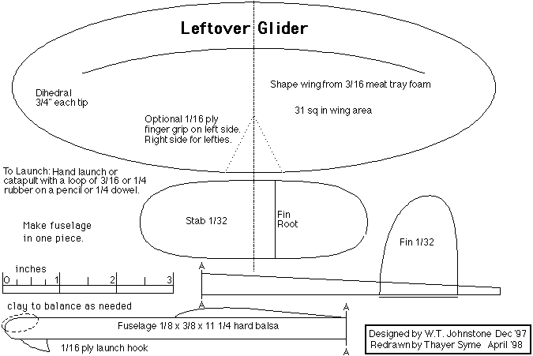

Subject: Plan for a foamwing glider
Here is a plan for a little (30sq.in.) glider made with meat tray foam wings. It's not designed to any rule. As a matter of fact, it was something that I put together to share with my elective class at Shue-Medill School. We were out of balsa and while they were building balsa wings, I....well, you get the picture.
Best,
Bill
This plan should print on a single sheet of letter sized paper. Note the scale in the lower left, and enlarge or reduce to suit.
Return to plans index
Copyright 1998, Thayer Syme. All rights reserved